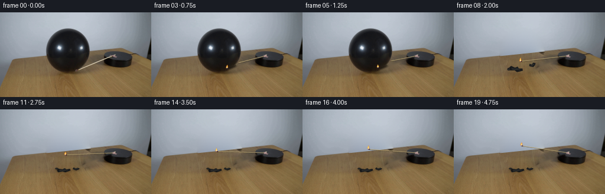
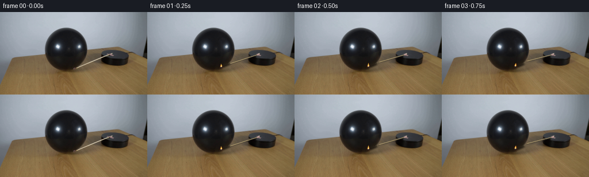
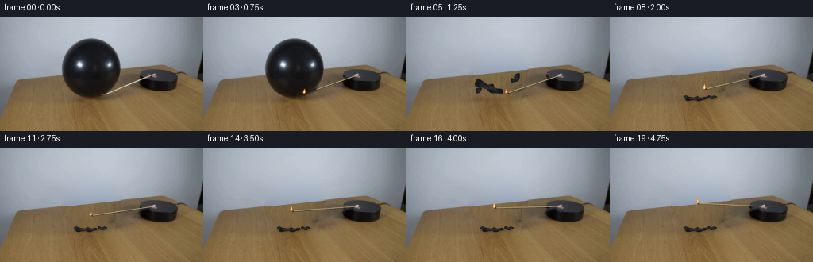
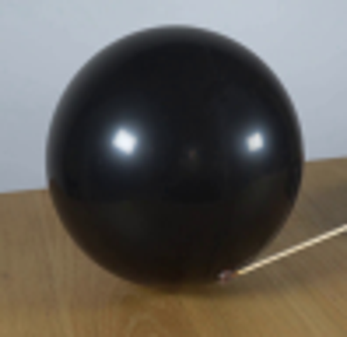
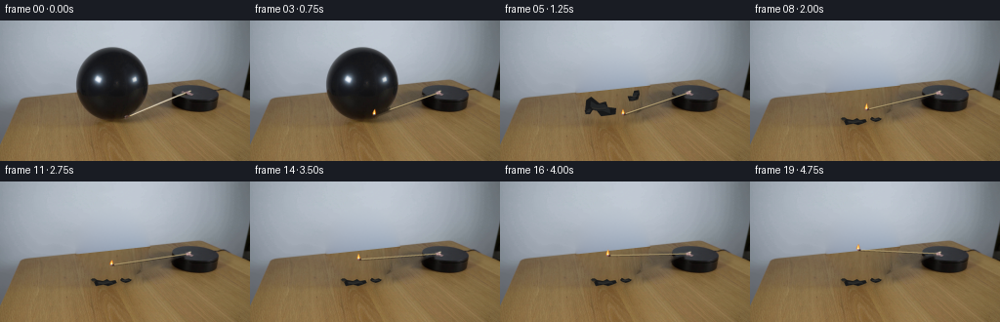
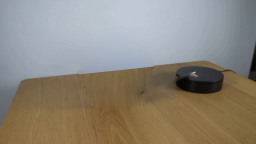

CODING AGENTS AS PIXEL WORLD MODELS
traex/GPT-6.1-Sol · 0112
点击播放 · 原生 RGB 像素
逐轮保存的候选
回放视频、检查图与代码变化。
每份候选均可单独播放。实际图片检查记录在下方工具轨迹中。
候选 01播放与检查图
点击播放 · 原生 RGB 像素

展开代码变化
--- 上一保存版本
+++ 本次保存版本
@@ -0,0 +1,184 @@
+from pathlib import Path
+import numpy as np
+from PIL import Image, ImageDraw, ImageFilter
+import cv2
+from scipy.ndimage import gaussian_filter
+from scipy.sparse import lil_matrix
+from scipy.sparse.linalg import spsolve
+import artifact_io
+
+ROOT=Path(__file__).resolve().parent
+W,H=256,144
+im=np.asarray(Image.open(ROOT/'first_frame.png').convert('RGB'))
+rng=np.random.default_rng(212)
+yy,xx=np.mgrid[:H,:W]
+
+# Recover the unobstructed locked-off plate using only local image samples.
+# The slender shaft is restored separately so that its rotation has no trail.
+rodmask=np.zeros((H,W),np.uint8)
+cv2.line(rodmask,(128,98),(190,74),255,3,cv2.LINE_AA)
+cv2.circle(rodmask,(129,98),3,255,-1)
+clean=cv2.inpaint(im,rodmask,3,cv2.INPAINT_TELEA)
+# Outline of the balloon, including the soft antialiasing at its rim.
+ballregion=((xx-114.7)/37.3)**2+((yy-64.6)/37.5)**2 < 1.065
+ballregion &= (xx>75)&(xx<155)&(yy>24)&(yy<105)
+
+# Smooth illumination of the wall fitted on all visible, nearby wall pixels.
+boundary=82.15-.105*xx
+wallgood=(yy<boundary-2)&(~ballregion)&(xx<237)
+wallgood &= (im.mean(axis=2)>85)
+u=(xx-128)/128; v=(yy-70)/70
+basis=np.stack([np.ones_like(u),u,v,u*u,u*v,v*v,u*u*u,u*u*v,u*v*v,v*v*v],axis=2)
+coef=np.linalg.lstsq(basis[wallgood],im[wallgood].astype(float),rcond=None)[0]
+wall=basis@coef
+noise=gaussian_filter(rng.normal(0,1,(H,W)),.55)
+wall+=noise[:,:,None]*.48
+
+# Use real wood grain from the visible lower-left table. Blend its gradients
+# with the known boundary colors, not a flat-colored filling.
+# This retains photographic texture and the perspective of the original grain.
+mapx=(xx-51 + .055*(yy-85)).astype(np.float32)
+mapy=(yy+27).astype(np.float32)
+wood=cv2.remap(im,mapx,mapy,cv2.INTER_LINEAR,borderMode=cv2.BORDER_REFLECT_101).astype(float)
+wood += np.array([4.0,2.7,1.0])
+wallweight=np.clip((boundary-yy+.5),0,1)
+proposal=wall*wallweight[:,:,None]+wood*(1-wallweight[:,:,None])
+# The small contact shadow vanishes with the inflated sphere.
+hole=ballregion | ((((xx-115)/33)**2+((yy-101.5)/8)**2<1)&(yy>94))
+# Poisson compositing transfers the wood grain, with a smoothly fitted wall.
+coords=np.argwhere(hole)
+inds=np.full((H,W),-1,int); inds[hole]=np.arange(len(coords))
+A=lil_matrix((len(coords),len(coords))); B=np.zeros((len(coords),3))
+for i,(y,x) in enumerate(coords):
+ A[i,i]=4
+ for dy,dx in ((1,0),(-1,0),(0,1),(0,-1)):
+ yn,xn=y+dy,x+dx
+ B[i]+=proposal[y,x]-proposal[yn,xn]
+ if hole[yn,xn]: A[i,inds[yn,xn]]=-1
+ else: B[i]+=clean[yn,xn]
+result=clean.astype(float)
+result[hole]=spsolve(A.tocsr(),B)
+plate=np.uint8(np.clip(result,0,255))
+Image.fromarray(plate).save(ROOT/'.tmp/plate.png')
+
+# Only a subpixel feather is used on the actual spherical surface, preserving
+# the reflections and all the original balloon texture before the rupture.
+ballalpha=np.clip((1.014-(((xx-114.7)/37.3)**2+((yy-64.6)/37.5)**2))*22,0,1)
+# Keep the real contact shadow as well until the pop.
+ballalpha=np.maximum(ballalpha,np.where(hole,1.,0.))
+intact=plate.astype(float)*(1-ballalpha[:,:,None])+clean.astype(float)*ballalpha[:,:,None]
+intact=np.uint8(np.clip(intact,0,255))
+
+S=4
+
+def composite(base,layer):
+ lay=np.asarray(layer.resize((W,H),Image.Resampling.LANCZOS)).astype(float)
+ a=lay[:,:,3:4]/255
+ return np.clip(base.astype(float)*(1-a)+lay[:,:,:3]*a,0,255).astype(np.uint8)
+
+def line(draw,xy,fill,width):
+ draw.line([(x*S,y*S) for x,y in xy],fill=fill,width=max(1,int(width*S)))
+
+def poly(draw,xy,fill):
+ draw.polygon([(x*S,y*S) for x,y in xy],fill=fill)
+
+def ellipse(draw,xy,fill):
+ draw.ellipse(tuple(q*S for q in xy),fill=fill)
+
+def flame_layer(t,x,y):
+ lay=Image.new('RGBA',(W*S,H*S)); d=ImageDraw.Draw(lay)
+ h=6.3+.6*np.sin(t*29)+.3*np.sin(t*41)
+ lean=.45*np.sin(t*19)+.2
+ # Small realistic luminous flame, rather than a large effect.
+ poly(d,[(x-1.1,y+.1),(x-1.8,y-2.1),(x-.85,y-4),(x+lean,y-h),
+ (x+.75+lean,y-4.2),(x+1.7,y-2.5),(x+1.25,y-.6)],(248,126,29,185))
+ poly(d,[(x-.8,y-.4),(x-.9,y-2.0),(x+lean*.3,y-h+.95),
+ (x+.9,y-2.1),(x+.65,y-.5)],(255,221,103,250))
+ ellipse(d,(x-.55,y-2,x+.7,y-.5),(255,251,205,255))
+ ellipse(d,(x-.8,y-.9,x+.65,y+.25),(106,134,216,140))
+ return lay
+
+def render_rod(base,t,intact_ball):
+ lay=Image.new('RGBA',(W*S,H*S)); d=ImageDraw.Draw(lay)
+ theta=np.deg2rad(141.55+12*t)
+ px,py=193.2,74.2
+ tx=px+83*np.cos(theta); ty=py+38.2*np.sin(theta)
+ ux,uy=(tx-px),(ty-py); norm=np.hypot(ux,uy); ux/=norm;uy/=norm
+ # Shaft shadow and wood core, dark charred match head.
+ line(d,[(px+.5,py+.65),(tx+.5,ty+.65)],(31,26,20,80),1.45)
+ line(d,[(px,py),(tx-ux*2.0,ty-uy*2.0)],(167,144,95,255),1.10)
+ line(d,[(px-.1,py-.2),(tx-ux*2,ty-uy*2-.2)],(224,208,160,255),.54)
+ line(d,[(tx-ux*2.7,ty-uy*2.7),(tx,ty)],(65,43,40,255),1.65)
+ ellipse(d,(tx-.6,ty-.55,tx+.7,ty+.55),(163,72,34,255))
+ # The small attachment on the platform stays attached to the rotating arm.
+ nx,ny=-uy,ux
+ poly(d,[(px+nx*1.05-ux*2,py+ny*1.05-uy*2),
+ (px-nx*1.05-ux*2,py-ny*1.05-uy*2),
+ (px-nx*1.05+ux*2.4,py-ny*1.05+uy*2.4),
+ (px+nx*1.05+ux*2.4,py+ny*1.05+uy*2.4)],(176,145,142,255))
+ if intact_ball:
+ # Parts passing behind the rounded balloon are occluded.
+ arr=np.asarray(lay).copy()
+ occ=cv2.resize(ballalpha.astype(np.float32),(W*S,H*S),interpolation=cv2.INTER_LINEAR)
+ arr[:,:,3]=np.uint8(arr[:,:,3]*(1-occ))
+ lay=Image.fromarray(arr)
+ out=composite(base,lay)
+ # In contact, the flame curls against the near silhouette, not through it.
+ if intact_ball:
+ fx=max(tx,129.0-1.1*t); fy=max(ty,97.0-2.2*t)
+ else: fx,fy=tx,ty
+ fl=flame_layer(t,fx,fy)
+ # A tiny warm reflection from the match, on the rubber at the point of touch.
+ if intact_ball:
+ a=np.exp(-(((xx-fx)/3.4)**2+((yy-fy+1.5)/3.8)**2))*ballalpha*.09
+ out=np.clip(out.astype(float)*(1-a[:,:,None])+np.array([233,97,29])*a[:,:,None],0,255).astype(np.uint8)
+ out=composite(out,fl)
+ return out
+
+# Torn latex is thin, matte on the inside, reflective on creased outer folds.
+# Its ballistic movement finishes quickly; the locked-off tabletop does not move.
+def fragments(base,t):
+ dt=t-1.75
+ lay=Image.new('RGBA',(W*S,H*S)); d=ImageDraw.Draw(lay)
+ pieces=[
+ (108,104,23,8,np.array([[-.51,-.11],[-.41,-.4],[-.1,-.23],[.07,-.47],[.19,-.22],[.44,-.35],[.5,-.02],[.34,.17],[.11,.4],[-.09,.2],[-.43,.38]])),
+ (129,101.5,12,5,np.array([[-.5,-.05],[-.34,-.5],[-.09,-.16],[.22,-.42],[.48,-.14],[.31,.22],[-.02,.48],[-.32,.21]])),
+ (96,101,6,3,np.array([[-.5,0],[-.26,-.42],[.1,-.5],[.46,-.1],[.4,.22],[-.14,.37]]))]
+ for j,(x,y,w,h,p) in enumerate(pieces):
+ if dt<.5:
+ f=max(0,1-dt/.5)
+ x+=(-5 if j==0 else 9 if j==1 else -5)*f
+ y-=(14 if j==0 else 24 if j==1 else 8)*f
+ h+= (5 if j==0 else 5)*f
+ ang=(.4 if j==0 else -.8)*f
+ else:
+ bounce=np.exp(-(dt-.5)*6)*np.sin((dt-.5)*19)*.6
+ y-=abs(bounce)
+ ang=0
+ # Contact shadow becomes darker as the membrane reaches the table.
+ sh=Image.new('RGBA',(W*S,H*S)); sd=ImageDraw.Draw(sh)
+ groundy=pieces[j][1]+1
+ ellipse(sd,(x-w*.6,groundy-1.9,x+w*.6,groundy+2.0),(24,17,9,int(48 if dt>=.5 else 20)))
+ sh=sh.filter(ImageFilter.GaussianBlur(1.2*S))
+ base=composite(base,sh)
+ R=np.array([[np.cos(ang),-np.sin(ang)],[np.sin(ang),np.cos(ang)]])
+ verts=(p*np.array([w,h]))@R.T+np.array([x,y])
+ poly(d,verts.tolist(),(23,24,25,255))
+ # Folded lobes modeled with soft dark ridges.
+ q=np.array([[-.36,-.17],[-.15,-.1],[.05,-.30],[.27,-.16],[.34,.06],[.08,.08],[-.12,.23],[-.31,.13]])*np.array([w,h])
+ q=q@R.T+np.array([x,y])
+ poly(d,q.tolist(),(35,37,38,255))
+ line(d,[(x-w*.31,y-.25),(x-w*.06,y+.35),(x+w*.16,y-.25)],(63,64,61,145),.47)
+ line(d,[(x-w*.25,y+1.2),(x+w*.15,y+1.4)],(12,12,13,220),.7)
+ return composite(base,lay)
+
+frames=[im.copy()]
+for i in range(1,20):
+ t=i/4
+ still=t<1.75
+ frame=(intact if still else plate).copy()
+ if not still: frame=fragments(frame,t)
+ frame=render_rod(frame,t,still)
+ frames.append(frame)
+frames=np.stack(frames)
+artifact_io.save(frames,ROOT)
候选 02播放与检查图
点击播放 · 原生 RGB 像素


展开代码变化
--- 上一保存版本
+++ 本次保存版本
@@ -38,7 +38,7 @@
# with the known boundary colors, not a flat-colored filling.
# This retains photographic texture and the perspective of the original grain.
mapx=(xx-51 + .055*(yy-85)).astype(np.float32)
-mapy=(yy+27).astype(np.float32)
+mapy=(112+.75*(yy-68)).astype(np.float32)
wood=cv2.remap(im,mapx,mapy,cv2.INTER_LINEAR,borderMode=cv2.BORDER_REFLECT_101).astype(float)
wood += np.array([4.0,2.7,1.0])
wallweight=np.clip((boundary-yy+.5),0,1)
@@ -100,7 +100,7 @@
def render_rod(base,t,intact_ball):
lay=Image.new('RGBA',(W*S,H*S)); d=ImageDraw.Draw(lay)
- theta=np.deg2rad(141.55+12*t)
+ theta=np.deg2rad(141.55+2*t if t<1.25 else 144.05+12*(t-1.25))
px,py=193.2,74.2
tx=px+83*np.cos(theta); ty=py+38.2*np.sin(theta)
ux,uy=(tx-px),(ty-py); norm=np.hypot(ux,uy); ux/=norm;uy/=norm
@@ -125,7 +125,7 @@
out=composite(base,lay)
# In contact, the flame curls against the near silhouette, not through it.
if intact_ball:
- fx=max(tx,129.0-1.1*t); fy=max(ty,97.0-2.2*t)
+ fx,fy=tx+.4,ty-.2
else: fx,fy=tx,ty
fl=flame_layer(t,fx,fy)
# A tiny warm reflection from the match, on the rubber at the point of touch.
@@ -138,21 +138,22 @@
# Torn latex is thin, matte on the inside, reflective on creased outer folds.
# Its ballistic movement finishes quickly; the locked-off tabletop does not move.
def fragments(base,t):
- dt=t-1.75
+ dt=t-1.25
lay=Image.new('RGBA',(W*S,H*S)); d=ImageDraw.Draw(lay)
pieces=[
(108,104,23,8,np.array([[-.51,-.11],[-.41,-.4],[-.1,-.23],[.07,-.47],[.19,-.22],[.44,-.35],[.5,-.02],[.34,.17],[.11,.4],[-.09,.2],[-.43,.38]])),
(129,101.5,12,5,np.array([[-.5,-.05],[-.34,-.5],[-.09,-.16],[.22,-.42],[.48,-.14],[.31,.22],[-.02,.48],[-.32,.21]])),
(96,101,6,3,np.array([[-.5,0],[-.26,-.42],[.1,-.5],[.46,-.1],[.4,.22],[-.14,.37]]))]
for j,(x,y,w,h,p) in enumerate(pieces):
- if dt<.5:
- f=max(0,1-dt/.5)
+ if dt<.4:
+ f=max(0,1-dt/.4)
x+=(-5 if j==0 else 9 if j==1 else -5)*f
y-=(14 if j==0 else 24 if j==1 else 8)*f
- h+= (5 if j==0 else 5)*f
+ h+= (10 if j==0 else 5)*f
+ w+= (10 if j==0 else 3)*f
ang=(.4 if j==0 else -.8)*f
else:
- bounce=np.exp(-(dt-.5)*6)*np.sin((dt-.5)*19)*.6
+ bounce=np.exp(-(dt-.4)*6)*np.sin((dt-.4)*19)*.6
y-=abs(bounce)
ang=0
# Contact shadow becomes darker as the membrane reaches the table.
@@ -175,7 +176,7 @@
frames=[im.copy()]
for i in range(1,20):
t=i/4
- still=t<1.75
+ still=t<1.25
frame=(intact if still else plate).copy()
if not still: frame=fragments(frame,t)
frame=render_rod(frame,t,still)
候选 03播放与检查图

候选 04播放与检查图
点击播放 · 原生 RGB 像素

展开代码变化
--- 上一保存版本
+++ 本次保存版本
@@ -137,11 +137,21 @@
# Torn latex is thin, matte on the inside, reflective on creased outer folds.
# Its ballistic movement finishes quickly; the locked-off tabletop does not move.
+def smooth_outline(points):
+ pts=np.asarray(points)
+ out=[]
+ for k in range(len(pts)):
+ p0,p1,p2,p3=[pts[j%len(pts)] for j in (k-1,k,k+1,k+2)]
+ for a in np.linspace(0,1,7,endpoint=False):
+ v=.5*((2*p1)+(-p0+p2)*a+(2*p0-5*p1+4*p2-p3)*a*a+(-p0+3*p1-3*p2+p3)*a*a*a)
+ out.append(v)
+ return np.asarray(out)
+
def fragments(base,t):
dt=t-1.25
lay=Image.new('RGBA',(W*S,H*S)); d=ImageDraw.Draw(lay)
pieces=[
- (108,104,23,8,np.array([[-.51,-.11],[-.41,-.4],[-.1,-.23],[.07,-.47],[.19,-.22],[.44,-.35],[.5,-.02],[.34,.17],[.11,.4],[-.09,.2],[-.43,.38]])),
+ (109,103.5,27,7,np.array([[-.51,-.11],[-.41,-.4],[-.1,-.23],[.07,-.47],[.19,-.22],[.44,-.35],[.5,-.02],[.34,.17],[.11,.4],[-.09,.2],[-.43,.38]])),
(129,101.5,12,5,np.array([[-.5,-.05],[-.34,-.5],[-.09,-.16],[.22,-.42],[.48,-.14],[.31,.22],[-.02,.48],[-.32,.21]])),
(96,101,6,3,np.array([[-.5,0],[-.26,-.42],[.1,-.5],[.46,-.1],[.4,.22],[-.14,.37]]))]
for j,(x,y,w,h,p) in enumerate(pieces):
@@ -149,7 +159,7 @@
f=max(0,1-dt/.4)
x+=(-5 if j==0 else 9 if j==1 else -5)*f
y-=(14 if j==0 else 24 if j==1 else 8)*f
- h+= (10 if j==0 else 5)*f
+ h+= (6 if j==0 else 4)*f
w+= (10 if j==0 else 3)*f
ang=(.4 if j==0 else -.8)*f
else:
@@ -164,12 +174,14 @@
base=composite(base,sh)
R=np.array([[np.cos(ang),-np.sin(ang)],[np.sin(ang),np.cos(ang)]])
verts=(p*np.array([w,h]))@R.T+np.array([x,y])
- poly(d,verts.tolist(),(23,24,25,255))
+ poly(d,smooth_outline(verts).tolist(),(23,24,25,255))
# Folded lobes modeled with soft dark ridges.
q=np.array([[-.36,-.17],[-.15,-.1],[.05,-.30],[.27,-.16],[.34,.06],[.08,.08],[-.12,.23],[-.31,.13]])*np.array([w,h])
q=q@R.T+np.array([x,y])
- poly(d,q.tolist(),(35,37,38,255))
+ poly(d,smooth_outline(q).tolist(),(35,37,38,255))
line(d,[(x-w*.31,y-.25),(x-w*.06,y+.35),(x+w*.16,y-.25)],(63,64,61,145),.47)
+ line(d,[(x-w*.12,y-.70),(x-w*.07,y+.65),(x+w*.09,y+1.3)],(59,60,59,130),.36)
+ line(d,[(x+w*.32,y-.3),(x+w*.24,y+.5),(x+w*.12,y+1.0)],(51,52,52,120),.4)
line(d,[(x-w*.25,y+1.2),(x+w*.15,y+1.4)],(12,12,13,220),.7)
return composite(base,lay)
可观测工具轨迹
实际执行的命令与返回图片。
命令 1exit 0
/bin/bash -lc 'ls -la && cat prompt.txt && cat GENERATION_RULES.md'
命令 2exit 0
/bin/bash -lc "cat artifact_io.py && python - <<'PY'
from PIL import Image
im=Image.open('first_frame.png'); print(im.size); im.resize((1024,576)).save('.tmp/enlarged.png')
PY"命令 3exit 0
/bin/bash -lc "python - <<'PY' import importlib.util for m in ['numpy','PIL','scipy','cv2']: print(m, bool(importlib.util.find_spec(m))) PY"
命令 4exit 0
/bin/bash -lc "python - <<'PY'
from PIL import Image
im=Image.open('first_frame.png'); im.crop((65,20,164,116)).resize((594,576)).save('.tmp/balloon.png')
PY"命令 5exit 0
/bin/bash -lc "cat > generate.py <<'PY'
from pathlib import Path
import numpy as np
from PIL import Image, ImageDraw, ImageFilter
import cv2
from scipy.ndimage import gaussian_filter
from scipy.sparse import lil_matrix
from scipy.sparse.linalg import spsolve
import artifact_io
ROOT=Path(__file__).resolve().parent
W,H=256,144
im=np.asarray(Image.open(ROOT/'first_frame.png').convert('RGB'))
rng=np.random.default_rng(212)
yy,xx=np.mgrid[:H,:W]
# Recover the unobstructed locked-off plate using only local image samples.
# The slender shaft is restored separately so that its rotation has no trail.
rodmask=np.zeros((H,W),np.uint8)
cv2.line(rodmask,(128,98),(190,74),255,3,cv2.LINE_AA)
cv2.circle(rodmask,(129,98),3,255,-1)
clean=cv2.inpaint(im,rodmask,3,cv2.INPAINT_TELEA)
# Outline of the balloon, including the soft antialiasing at its rim.
ballregion=((xx-114.7)/37.3)**2+((yy-64.6)/37.5)**2 < 1.065
ballregion &= (xx>75)&(xx<155)&(yy>24)&(yy<105)
# Smooth illumination of the wall fitted on all visible, nearby wall pixels.
boundary=82.15-.105*xx
wallgood=(yy<boundary-2)&(~ballregion)&(xx<237)
wallgood &= (im.mean(axis=2)>85)
u=(xx-128)/128; v=(yy-70)/70
basis=np.stack([np.ones_like(u),u,v,u*u,u*v,v*v,u*u*u,u*u*v,u*v*v,v*v*v],axis=2)
coef=np.linalg.lstsq(basis[wallgood],im[wallgood].astype(float),rcond=None)[0]
wall=basis@coef
noise=gaussian_filter(rng.normal(0,1,(H,W)),.55)
wall+=noise[:,:,None]*.48
# Use real wood grain from the visible lower-left table. Blend its gradients
# with the known boundary colors, not a flat-colored filling.
# This retains photographic texture and the perspective of the original grain.
mapx=(xx-51 + .055*(yy-85)).astype(np.float32)
mapy=(yy+27).astype(np.float32)
wood=cv2.remap(im,mapx,mapy,cv2.INTER_LINEAR,borderMode=cv2.BORDER_REFLECT_101).astype(float)
wood += np.array([4.0,2.7,1.0])
wallweight=np.clip((boundary-yy+.5),0,1)
proposal=wall*wallweight[:,:,None]+wood*(1-wallweight[:,:,None])
# The small contact shadow vanishes with the inflated sphere.
hole=ballregion | ((((xx-115)/33)**2+((yy-101.5)/8)**2<1)&(yy>94))
# Poisson compositing transfers the wood grain, with a smoothly fitted wall.
coords=np.argwhere(hole)
inds=np.full((H,W),-1,int); inds[hole]=np.arange(len(coords))
A=lil_matrix((len(coords),len(coords))); B=np.zeros((len(coords),3))
for i,(y,x) in enumerate(coords):
A[i,i]=4
for dy,dx in ((1,0),(-1,0),(0,1),(0,-1)):
yn,xn=y+dy,x+dx
B[i]+=proposal[y,x]-proposal[yn,xn]
if hole[yn,xn]: A[i,inds[yn,xn]]=-1
else: B[i]+=clean[yn,xn]
result=clean.astype(float)
result[hole]=spsolve(A.tocsr(),B)
plate=np.uint8(np.clip(result,0,255))
Image.fromarray(plate).save(ROOT/'.tmp/plate.png')
# Only a subpixel feather is used on the actual spherical surface, preserving
# the reflections and all the original balloon texture before the rupture.
ballalpha=np.clip((1.014-(((xx-114.7)/37.3)**2+((yy-64.6)/37.5)**2))*22,0,1)
# Keep the real contact shadow as well until the pop.
ballalpha=np.maximum(ballalpha,np.where(hole,1.,0.))
intact=plate.astype(float)*(1-ballalpha[:,:,None])+clean.astype(float)*ballalpha[:,:,None]
intact=np.uint8(np.clip(intact,0,255))
S=4
def composite(base,layer):
lay=np.asarray(layer.resize((W,H),Image.Resampling.LANCZOS)).astype(float)
a=lay[:,:,3:4]/255
return np.clip(base.astype(float)*(1-a)+lay[:,:,:3]*a,0,255).astype(np.uint8)
def line(draw,xy,fill,width):
draw.line([(x*S,y*S) for x,y in xy],fill=fill,width=max(1,int(width*S)))
def poly(draw,xy,fill):
draw.polygon([(x*S,y*S) for x,y in xy],fill=fill)
def ellipse(draw,xy,fill):
draw.ellipse(tuple(q*S for q in xy),fill=fill)
def flame_layer(t,x,y):
lay=Image.new('RGBA',(W*S,H*S)); d=ImageDraw.Draw(lay)
h=6.3+.6*np.sin(t*29)+.3*np.sin(t*41)
lean=.45*np.sin(t*19)+.2
# Small realistic luminous flame, rather than a large effect.
poly(d,[(x-1.1,y+.1),(x-1.8,y-2.1),(x-.85,y-4),(x+lean,y-h),
(x+.75+lean,y-4.2),(x+1.7,y-2.5),(x+1.25,y-.6)],(248,126,29,185))
poly(d,[(x-.8,y-.4),(x-.9,y-2.0),(x+lean*.3,y-h+.95),
(x+.9,y-2.1),(x+.65,y-.5)],(255,221,103,250))
ellipse(d,(x-.55,y-2,x+.7,y-.5),(255,251,205,255))
ellipse(d,(x-.8,y-.9,x+.65,y+.25),(106,134,216,140))
return lay
def render_rod(base,t,intact_ball):
lay=Image.new('RGBA',(W*S,H*S)); d=ImageDraw.Draw(lay)
theta=np.deg2rad(141.55+12*t)
px,py=193.2,74.2
tx=px+83*np.cos(theta); ty=py+38.2*np.sin(theta)
ux,uy=(tx-px),(ty-py); norm=np.hypot(ux,uy); ux/=norm;uy/=norm
# Shaft shadow and wood core, dark charred match head.
line(d,[(px+.5,py+.65),(tx+.5,ty+.65)],(31,26,20,80),1.45)
line(d,[(px,py),(tx-ux*2.0,ty-uy*2.0)],(167,144,95,255),1.10)
line(d,[(px-.1,py-.2),(tx-ux*2,ty-uy*2-.2)],(224,208,160,255),.54)
line(d,[(tx-ux*2.7,ty-uy*2.7),(tx,ty)],(65,43,40,255),1.65)
ellipse(d,(tx-.6,ty-.55,tx+.7,ty+.55),(163,72,34,255))
# The small attachment on the platform stays attached to the rotating arm.
nx,ny=-uy,ux
poly(d,[(px+nx*1.05-ux*2,py+ny*1.05-uy*2),
(px-nx*1.05-ux*2,py-ny*1.05-uy*2),
(px-nx*1.05+ux*2.4,py-ny*1.05+uy*2.4),
(px+nx*1.05+ux*2.4,py+ny*1.05+uy*2.4)],(176,145,142,255))
if intact_ball:
# Parts passing behind the rounded balloon are occluded.
arr=np.asarray(lay).copy()
occ=cv2.resize(ballalpha.astype(np.float32),(W*S,H*S),interpolation=cv2.INTER_LINEAR)
arr[:,:,3]=np.uint8(arr[:,:,3]*(1-occ))
lay=Image.fromarray(arr)
out=composite(base,lay)
# In contact, the flame curls against the near silhouette, not through it.
if intact_ball:
fx=max(tx,129.0-1.1*t); fy=max(ty,97.0-2.2*t)
else: fx,fy=tx,ty
fl=flame_layer(t,fx,fy)
# A tiny warm reflection from the match, on the rubber at the point of touch.
if intact_ball:
a=np.exp(-(((xx-fx)/3.4)**2+((yy-fy+1.5)/3.8)**2))*ballalpha*.09
out=np.clip(out.astype(float)*(1-a[:,:,None])+np.array([233,97,29])*a[:,:,None],0,255).astype(np.uint8)
out=composite(out,fl)
return out
# Torn latex is thin, matte on the inside, reflective on creased outer folds.
# Its ballistic movement finishes quickly; the locked-off tabletop does not move.
def fragments(base,t):
dt=t-1.75
lay=Image.new('RGBA',(W*S,H*S)); d=ImageDraw.Draw(lay)
pieces=[
(108,104,23,8,np.array([[-.51,-.11],[-.41,-.4],[-.1,-.23],[.07,-.47],[.19,-.22],[.44,-.35],[.5,-.02],[.34,.17],[.11,.4],[-.09,.2],[-.43,.38]])),
(129,101.5,12,5,np.array([[-.5,-.05],[-.34,-.5],[-.09,-.16],[.22,-.42],[.48,-.14],[.31,.22],[-.02,.48],[-.32,.21]])),
(96,101,6,3,np.array([[-.5,0],[-.26,-.42],[.1,-.5],[.46,-.1],[.4,.22],[-.14,.37]]))]
for j,(x,y,w,h,p) in enumerate(pieces):
if dt<.5:
f=max(0,1-dt/.5)
x+=(-5 if j==0 else 9 if j==1 else -5)*f
y-=(14 if j==0 else 24 if j==1 else 8)*f
h+= (5 if j==0 else 5)*f
ang=(.4 if j==0 else -.8)*f
else:
bounce=np.exp(-(dt-.5)*6)*np.sin((dt-.5)*19)*.6
y-=abs(bounce)
ang=0
# Contact shadow becomes darker as the membrane reaches the table.
sh=Image.new('RGBA',(W*S,H*S)); sd=ImageDraw.Draw(sh)
groundy=pieces[j][1]+1
ellipse(sd,(x-w*.6,groundy-1.9,x+w*.6,groundy+2.0),(24,17,9,int(48 if dt>=.5 else 20)))
sh=sh.filter(ImageFilter.GaussianBlur(1.2*S))
base=composite(base,sh)
R=np.array([[np.cos(ang),-np.sin(ang)],[np.sin(ang),np.cos(ang)]])
verts=(p*np.array([w,h]))@R.T+np.array([x,y])
poly(d,verts.tolist(),(23,24,25,255))
# Folded lobes modeled with soft dark ridges.
q=np.array([[-.36,-.17],[-.15,-.1],[.05,-.30],[.27,-.16],[.34,.06],[.08,.08],[-.12,.23],[-.31,.13]])*np.array([w,h])
q=q@R.T+np.array([x,y])
poly(d,q.tolist(),(35,37,38,255))
line(d,[(x-w*.31,y-.25),(x-w*.06,y+.35),(x+w*.16,y-.25)],(63,64,61,145),.47)
line(d,[(x-w*.25,y+1.2),(x+w*.15,y+1.4)],(12,12,13,220),.7)
return composite(base,lay)
frames=[im.copy()]
for i in range(1,20):
t=i/4
still=t<1.75
frame=(intact if still else plate).copy()
if not still: frame=fragments(frame,t)
frame=render_rod(frame,t,still)
frames.append(frame)
frames=np.stack(frames)
artifact_io.save(frames,ROOT)
PY
python generate.py"命令 6exit 0
/bin/bash -lc "python - <<'PY'
from PIL import Image
im=Image.open('.tmp/plate.png'); im.resize((1024,576)).save('.tmp/pbig.png')
PY"命令 7exit 0
/bin/bash -lc "python - <<'PY'
p='generate.py'
s=open(p).read().replace('mapy=(yy+27).astype(np.float32)','mapy=(112+.75*(yy-68)).astype(np.float32)')
s=s.replace('theta=np.deg2rad(141.55+12*t)','theta=np.deg2rad(141.55+2*t if t<1.25 else 144.05+12*(t-1.25))')
s=s.replace('fx=max(tx,129.0-1.1*t); fy=max(ty,97.0-2.2*t)','fx,fy=tx+.4,ty-.2')
s=s.replace('dt=t-1.75','dt=t-1.25')
s=s.replace('still=t<1.75','still=t<1.25')
s=s.replace('if dt<.5:\\n f=max(0,1-dt/.5)','if dt<.4:\\n f=max(0,1-dt/.4)')
s=s.replace('bounce=np.exp(-(dt-.5)*6)*np.sin((dt-.5)*19)*.6','bounce=np.exp(-(dt-.4)*6)*np.sin((dt-.4)*19)*.6')
s=s.replace('h+= (5 if j==0 else 5)*f','h+= (10 if j==0 else 5)*f\\n w+= (10 if j==0 else 3)*f')
open(p,'w').write(s)
PY
python generate.py"命令 8exit 0
/bin/bash -lc "python - <<'PY'
p='generate.py'
s=open(p).read()
s=s.replace('def fragments(base,t):','def smooth_outline(points):\\n pts=np.asarray(points)\\n out=[]\\n for k in range(len(pts)):\\n p0,p1,p2,p3=[pts[j%len(pts)] for j in (k-1,k,k+1,k+2)]\\n for a in np.linspace(0,1,7,endpoint=False):\\n v=.5*((2*p1)+(-p0+p2)*a+(2*p0-5*p1+4*p2-p3)*a*a+(-p0+3*p1-3*p2+p3)*a*a*a)\\n out.append(v)\\n return np.asarray(out)\\n\\ndef fragments(base,t):')
s=s.replace('(108,104,23,8,','(109,103.5,27,7,')
s=s.replace('h+= (10 if j==0 else 5)*f','h+= (6 if j==0 else 4)*f')
s=s.replace('poly(d,verts.tolist(),(23,24,25,255))','poly(d,smooth_outline(verts).tolist(),(23,24,25,255))')
s=s.replace('poly(d,q.tolist(),(35,37,38,255))','poly(d,smooth_outline(q).tolist(),(35,37,38,255))')
s=s.replace('line(d,[(x-w*.31,y-.25),(x-w*.06,y+.35),(x+w*.16,y-.25)],(63,64,61,145),.47)','line(d,[(x-w*.31,y-.25),(x-w*.06,y+.35),(x+w*.16,y-.25)],(63,64,61,145),.47)\\n line(d,[(x-w*.12,y-.70),(x-w*.07,y+.65),(x+w*.09,y+1.3)],(59,60,59,130),.36)\\n line(d,[(x+w*.32,y-.3),(x+w*.24,y+.5),(x+w*.12,y+1.0)],(51,52,52,120),.4)')
open(p,'w').write(s)
PY
python generate.py
python - <<'PY'
import numpy as np
from PIL import Image
orig=np.asarray(Image.open('first_frame.png'))
first=np.asarray(Image.open('frames/00.png'))
a=np.load('pixels.npz')['pixels']; print('Output shape:',a.shape,'First frame identical:',np.array_equal(first,orig),'Frames:',len(list(__import__('pathlib').Path('frames').glob('*.png'))))
PY"视觉工具实际返回图片 1

视觉工具实际返回图片 2

视觉工具实际返回图片 3

视觉工具实际返回图片 4
视觉工具实际返回图片 5
视觉工具实际返回图片 6

视觉工具实际返回图片 7

视觉工具实际返回图片 8

保存候选 4 份；完成命令 8 次；可验证图片返回 8 张。原始 API 响应与完整日志保留在本地。